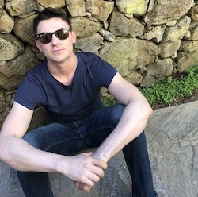

he / him / his - I'm a first-gen Mexican American, biomedical engineering and economics undergrad who has an affinity for bollywood dance numbers and the LGBT community. My favorite moments in life are when I am reminded of how similar we are as human. For example...
When the biomass we call the human body receives light and sound stimulus what happens? In the ears sound vibrates the eardrum, while in our eyes light energy activates photoreceptors called cones and rods. A cascade of biochemical and neurological events follow leading to the creation of thought and emotion via millions of connected neurons in the brain. Put enough of those stimuli together and you've got a great story that inevitably feeds what some call the soul. Tell me that isn't cool.
Originally from southern california Ramon moved to New York for school and work before returning back to Southern California.
About Me
